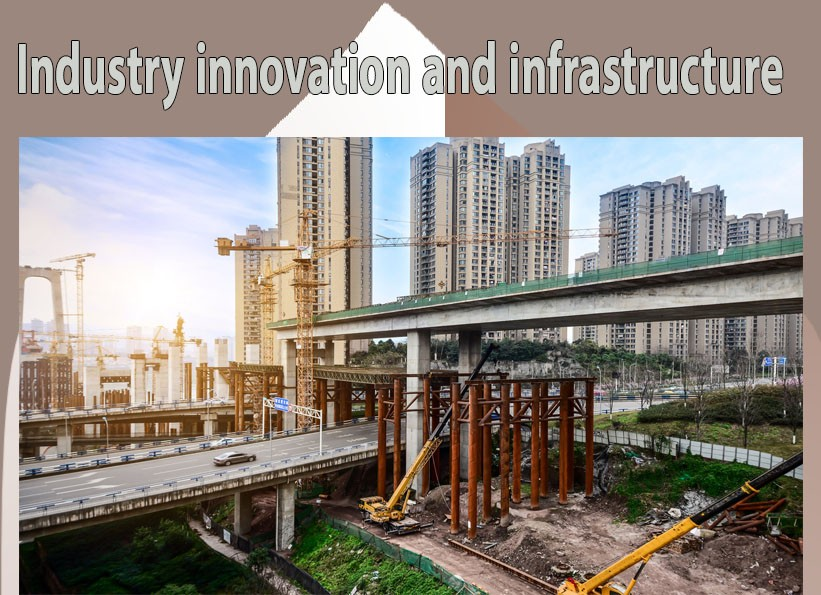
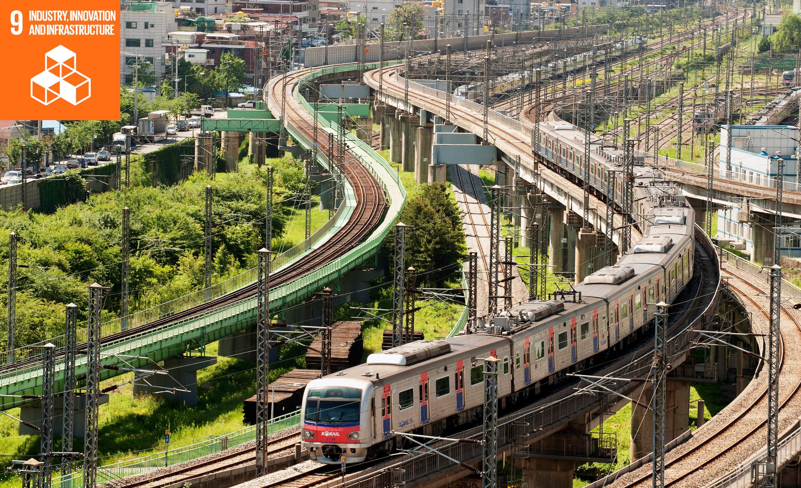

Significance of Industry, Innovation and Infrastructure
It can an unleash dynamic and competitive economic forces that generate employment and income.
Current Global Status of Industry, Innovation and Infrastructure
As of 2022, 95% of the world’s population was within reach of a mobile broadband network,5% areas remain undeserved.
Investment in research and development globally – as well as financing for economic infrastructure in developing countries.
The target of Industry, Innovation and Infrastructure
Develop sustainable,resilient and inclusive infrastructure
Promote inclusive and sustainable industrialization
Increase access to financial services and markets
Enhance research and upgrade industrial technologies
Universal access to information and communications technology
The challenges of Industry, Innovation and Infrastructure
The challenges of Industry, Innovation and Infrastructure is furing the pandemic (Covid-19)
The pandemic hit industries hard and caused disruptions in value chains of goods and their supply,
and has affected the digitization of business and services such as video conferencing, healthcare, teleworking etc.
These are the examples of Industry, Innovation and Infrastraction


This is meant by Industry, Innovation and Infrastructures
Industry is the production of goods or related services within an economy. Innovation is a new idea, device or method.
Infrastructure refers to the fundamental facilities and systems serving a country, city or area,
including the services and facilities necessary for its economy to function.
The potential solutions for Industry, Innovation and Infrastructure
Develop quanlity,reliable sustainable and resilient infrastructure
Increase the access of small-scale industries another enterprises to financial services
Enchance scientific research and technology,particulary in developing countries and encourage innovation
Facililate sustainable and resilient infrastructure development in developing countries and small island developing states